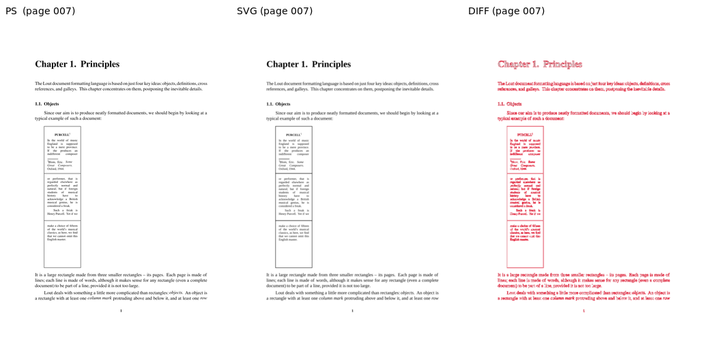
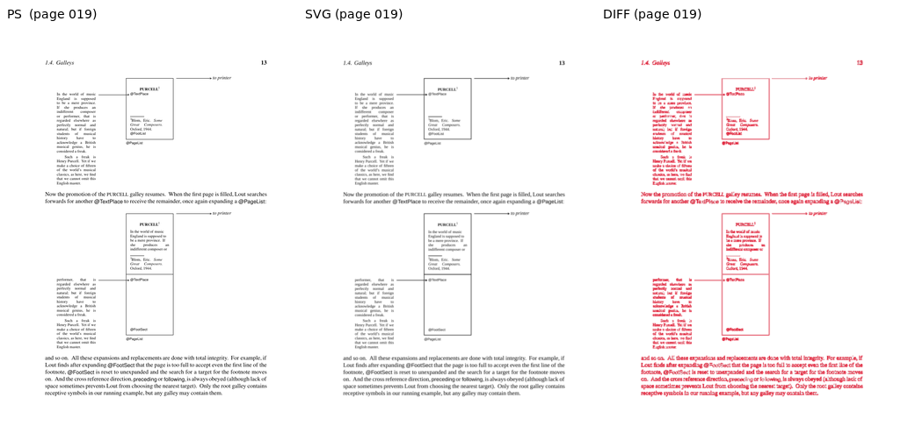
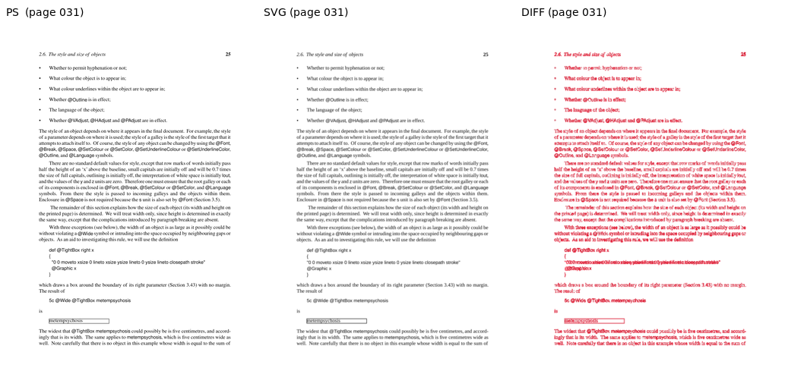
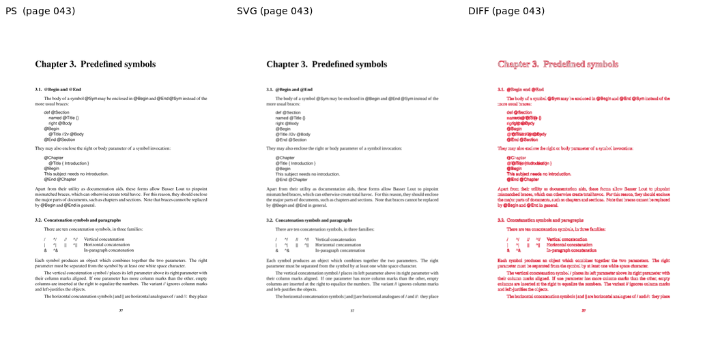
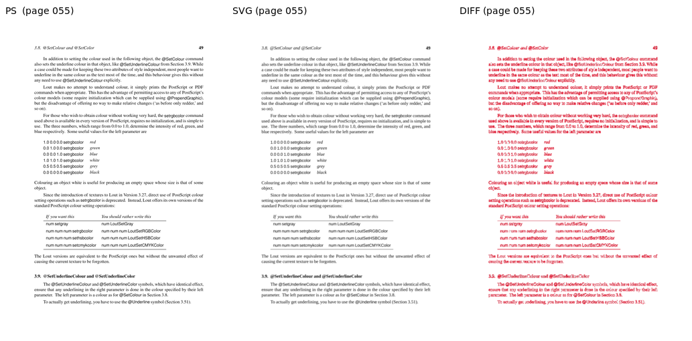
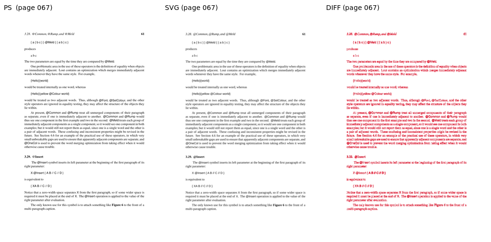
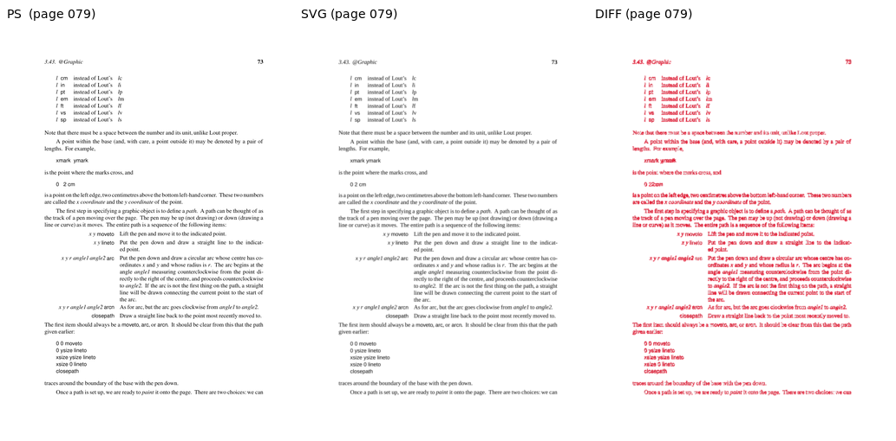
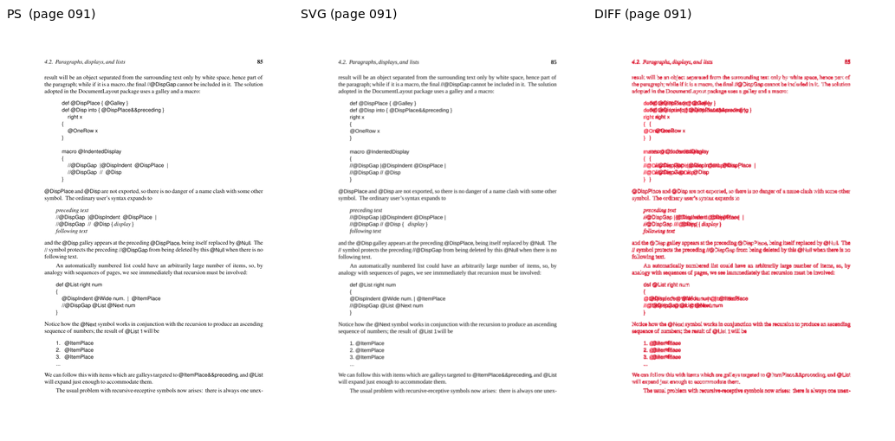
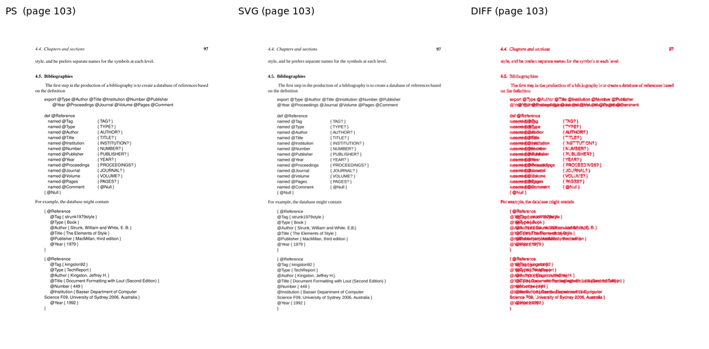
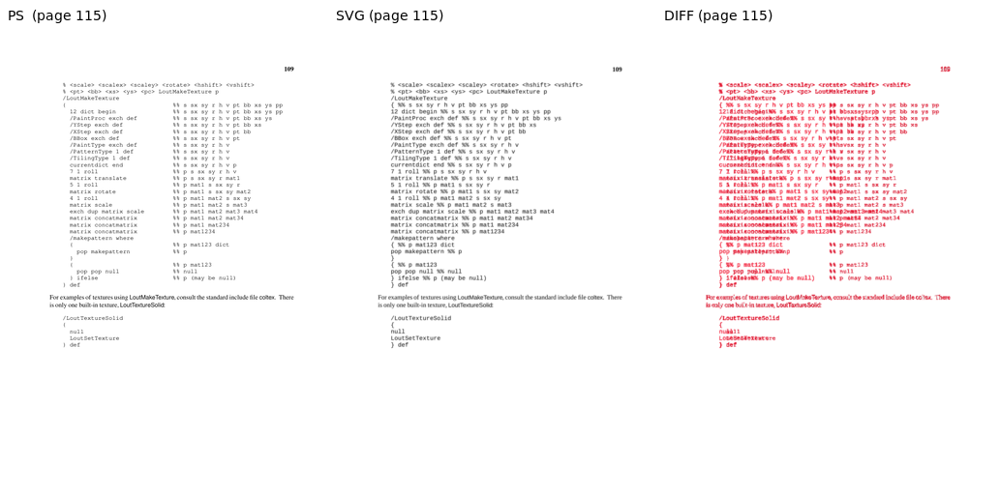

Sampled pages, rendered via both the PostScript pipeline (lout + ps2pdf + pdftoppm) and the SVG pipeline (lout -G via z53.c + rsvg-convert). AE = ImageMagick absolute-error pixel count at 5% fuzz; SSIM is scikit-image structural_similarity on luminance (1.0 = identical).
| Page | W | H | Diff px | Diff % | SSIM | Verdict |
|---|---|---|---|---|---|---|
| 007 | 827 | 1170 | 38671 | 4.00 | 0.9713 | OK |
| 019 | 827 | 1170 | 52625 | 5.44 | 0.9447 | DIFF |
| 031 | 827 | 1170 | 85322 | 8.82 | 0.9348 | DIFF |
| 043 | 827 | 1170 | 56905 | 5.88 | 0.9445 | DIFF |
| 055 | 827 | 1170 | 88535 | 9.15 | 0.9111 | DIFF |
| 067 | 827 | 1170 | 74562 | 7.71 | 0.9163 | DIFF |
| 079 | 827 | 1170 | 65796 | 6.80 | 0.9280 | DIFF |
| 091 | 827 | 1170 | 65065 | 6.72 | 0.9177 | DIFF |
| 103 | 827 | 1170 | 62384 | 6.45 | 0.8946 | DIFF |
| 115 | 827 | 1170 | 57934 | 5.99 | 0.8433 | DIFF |









